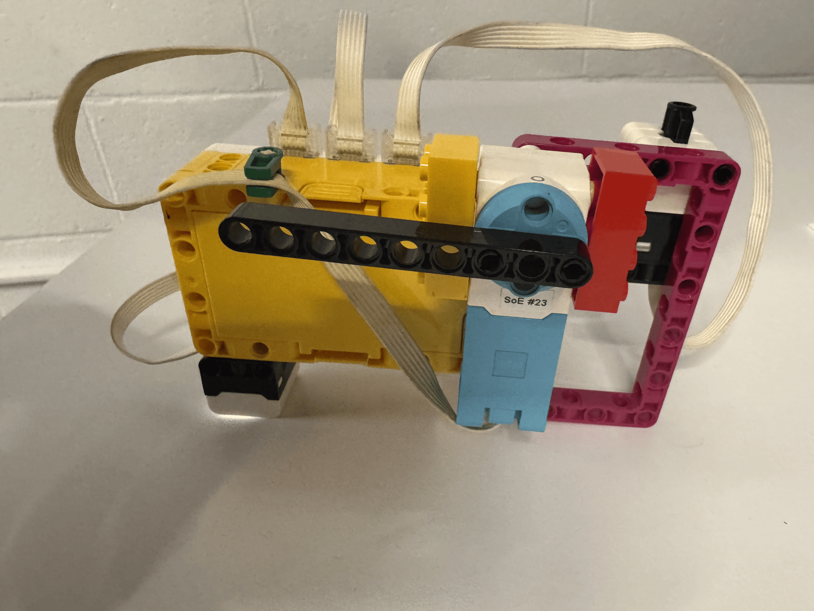

For this project, I created a fruit scanner that used a nearest neighbor algorithm to classify a fruit as either an apple or a bannana using the color sensor from the kit as the input. I used the force sensor and motor to label the data of the color sensor and I copied the data from the console and pasted it into the inferencing code to be able to classify the fruit. I also used the light matrix to display the result of the classification. Some of the math that was involved was taking the RGB value that the color sensor gave and using the pythagoreon theorem, we were able to compare the distance between the reading during inferencing and the training data.
# Setup: Color Sensor on D, Force Sensor on B, motor on F.
# Press the force sensor to collect a labeled RGBI example.
# Press the right hub arrow to finish collecting data.
from hub import port, button, light_matrix
import runloop
import color_sensor
import force_sensor
import motor
DEBOUNCE_MS = 50
async def main():
# Print a heading so the Console output is easy to copy as CSV text.
print("red,green,blue,intensity,label")
# Collect examples until the right hub arrow is pressed.
while not button.pressed(button.RIGHT):
if force_sensor.pressed(port.B):
# Confirm the force sensor is still pressed after the debounce delay.
await runloop.sleep_ms(DEBOUNCE_MS)
if force_sensor.pressed(port.B):
# Read the color sensor and motor position.
color_reading = color_sensor.rgbi(port.D)
motor_position = motor.absolute_position(port.F)
# Print one comma-separated row for an apple example.
if motor_position >= 0 and motor_position < 180:
print(
color_reading[0], ",",
color_reading[1], ",",
color_reading[2], ",",
color_reading[3], ",APPLE",
sep=""
)
await light_matrix.write("A")
# Print one comma-separated row for a banana example.
elif motor_position < 0 and motor_position > -180:
print(
color_reading[0], ",",
color_reading[1], ",",
color_reading[2], ",",
color_reading[3], ",BANANA",
sep=""
)
await light_matrix.write("B")
# Do not save examples at positions outside the label ranges.
else:
print("Motor position has no label; row not saved.")
# Wait for release so one press collects only one example.
while force_sensor.pressed(port.B):
await runloop.sleep_ms(20)
# Debounce the release before checking for another press.
await runloop.sleep_ms(DEBOUNCE_MS)
await runloop.sleep_ms(20)
# Show that data collection has ended.
await light_matrix.write("DONE")
runloop.run(main())
# Setup: Color Sensor on D, motor on F.
# Press the left hub arrow to classify the current color reading.
from hub import port, button, light_matrix
import runloop
import color_sensor
import force_sensor
import motor
MOTOR_SPEED = 300
DEBOUNCE_MS = 50
# Replace these sample rows with the rows copied from the collection program's Console.
# Each row contains red, green, blue, intensity, and the label.
TRAINING_DATA = [
(1022, 806, 556, 1021, "BANANA"),
(1021, 822, 585, 1022, "BANANA"),
(972, 770, 538, 1020, "BANANA"),
(913, 719, 514, 1016, "BANANA"),
(750, 592, 418, 1011, "BANANA"),
(387, 301, 220, 734, "BANANA"),
(953, 760, 565, 1018, "BANANA"),
(467, 351, 260, 863, "BANANA"),
(433, 339, 247, 814, "BANANA"),
(419, 320, 233, 782, "BANANA"),
(267, 189, 130, 479, "BANANA"),
(706, 510, 354, 1018, "BANANA"),
(489, 363, 249, 885, "BANANA"),
(151, 111, 74, 274, "BANANA"),
(716, 571, 402, 1016, "BANANA"),
(550, 432, 319, 1007, "BANANA"),
(226, 168, 119, 414, "BANANA"),
(1022, 807, 539, 1020, "BANANA"),
(367, 275, 195, 678, "BANANA"),
(689, 554, 399, 1016, "BANANA"),
(424, 316, 215, 784, "BANANA"),
(517, 401, 285, 957, "BANANA"),
(928, 730, 496, 1019, "BANANA"),
(881, 682, 455, 1019, "BANANA"),
(364, 266, 200, 666, "BANANA"),
(733, 568, 393, 1014, "BANANA"),
(979, 780, 543, 1014, "BANANA"),
# (42, 34, 23, 79, "BANANA"), # might be bad data
(529, 409, 290, 983, "BANANA"),
(771, 697, 436, 1023, "BANANA"),
(454, 406, 258, 895, "BANANA"),
(949, 804, 545, 1020, "BANANA"),
(964, 805, 556, 1015, "BANANA"),
(153, 116, 85, 291, "BANANA"),
# (1, 0, 0, 0, "BANANA"), # might be bad data
# (2, 3, 3, 6, "BANANA"), # might be bad data
# (14, 12, 9, 29, "BANANA"), # might be bad data
(944, 732, 509, 1014, "BANANA"),
(971, 756, 532, 1019, "BANANA"),
(556, 413, 278, 1008, "BANANA"),
(908, 706, 449, 1017, "BANANA"),
# (9, 5, 3, 17, "BANANA"), # might be bad data
# (20, 15, 13, 37, "BANANA"), # might be bad data
# (17, 14, 9, 31, "BANANA"), # might be bad data
(225, 32, 61, 262, "APPLE"),
(536, 80, 146, 626, "APPLE"),
(532, 80, 146, 623, "APPLE"),
(181, 24, 48, 207, "APPLE"),
(130, 16, 34, 148, "APPLE"),
(389, 54, 106, 448, "APPLE"),
(187, 25, 50, 215, "APPLE"),
(83, 9, 21, 92, "APPLE"),
(305, 44, 82, 354, "APPLE"),
(78, 9, 19, 88, "APPLE"),
(41, 4, 10, 45, "APPLE"),
(94, 10, 25, 106, "APPLE"),
(400, 56, 108, 461, "APPLE"),
(68, 9, 20, 80, "APPLE"),
(159, 21, 43, 183, "APPLE"),
(95, 12, 25, 108, "APPLE"),
(209, 29, 57, 242, "APPLE"),
(117, 14, 30, 132, "APPLE"),
(87, 13, 26, 103, "APPLE"),
(371, 55, 101, 433, "APPLE"),
(553, 82, 151, 647, "APPLE"),
(514, 75, 139, 599, "APPLE"),
(128, 16, 34, 146, "APPLE"),
(375, 54, 102, 438, "APPLE"),
(643, 99, 178, 756, "APPLE"),
(568, 84, 153, 661, "APPLE"),
(563, 85, 155, 660, "APPLE"),
(242, 33, 64, 279, "APPLE"),
(597, 90, 164, 697, "APPLE"),
(277, 42, 78, 322, "APPLE"),
(143, 22, 40, 168, "APPLE"),
(133, 20, 31, 161, "APPLE"),
(86, 27, 34, 120, "APPLE"),
(662, 189, 245, 896, "APPLE"),
(618, 176, 225, 822, "APPLE"),
(1022, 324, 438, 1022, "APPLE"),
(1023, 325, 441, 1022, "APPLE"),
(614, 161, 211, 795, "APPLE"),
(173, 49, 61, 228, "APPLE"),
(1022, 287, 391, 1022, "APPLE"),
(317, 91, 117, 429, "APPLE")
]
async def main():
# Wait for force-sensor presses to request a prediction.
while True:
if force_sensor.pressed(port.B):
# Debounce the press by checking it again after a short pause.
await runloop.sleep_ms(DEBOUNCE_MS)
if force_sensor.pressed(port.B):
# Read the current color sensor RGBI values.
new_reading = color_sensor.rgbi(port.D)
if len(TRAINING_DATA) == 0:
print("No training data has been entered.")
else:
# Start by treating the first training row as the nearest example.
nearest_index = 0
first_row = TRAINING_DATA[0]
smallest_difference = (
abs(new_reading[0] - first_row[0])
+ abs(new_reading[1] - first_row[1])
+ abs(new_reading[2] - first_row[2])
+ abs(new_reading[3] - first_row[3])
)
# Compare the current reading with the rest of the training rows.
for index in range(1, len(TRAINING_DATA)):
saved_row = TRAINING_DATA[index]
difference = (
abs(new_reading[0] - saved_row[0])
+ abs(new_reading[1] - saved_row[1])
+ abs(new_reading[2] - saved_row[2])
+ abs(new_reading[3] - saved_row[3])
)
# Remember the training row with the smallest difference.
if difference < smallest_difference:
smallest_difference = difference
nearest_index = index
# Get the label from the nearest training row.
prediction = TRAINING_DATA[nearest_index][4]
# Display the result and move the motor to the matching position.
if prediction == "APPLE":
await light_matrix.write("A")
await motor.run_to_absolute_position(
port.F, 90, MOTOR_SPEED
)
print("Prediction: APPLE")
else:
await light_matrix.write("B")
await motor.run_to_absolute_position(
port.F, 270, MOTOR_SPEED
)
print("Prediction: BANANA")
# Wait for release so one press causes only one classification.
while force_sensor.pressed(port.B):
await runloop.sleep_ms(20)
# Debounce the release before checking for another press.
await runloop.sleep_ms(DEBOUNCE_MS)
await runloop.sleep_ms(20)
runloop.run(main())